Huit coupures pour la monnaie locale du Valais, baptisée d’après Joseph-Samuel Farinet, le plus célèbre
faux-monnayeur de Suisse. J’en ai dessiné tous les billets : montagnes et monuments en facettes, faune valaisanne,
cartes topographiques, microtextes. De vrais billets, acceptés jusqu’aux guichets de la Ville de Sion.
8 coupures · 16 faces1 · 2 · 5 · 10 · 13 · 20 · 50 · 1001 farinet = 1 francExposés au Musée de la fausse monnaie, Saillon
01
La collection
Chaque billet, recto et verso. Passez sur l’image pour sortir la loupe — comme on inspecte un vrai billet.
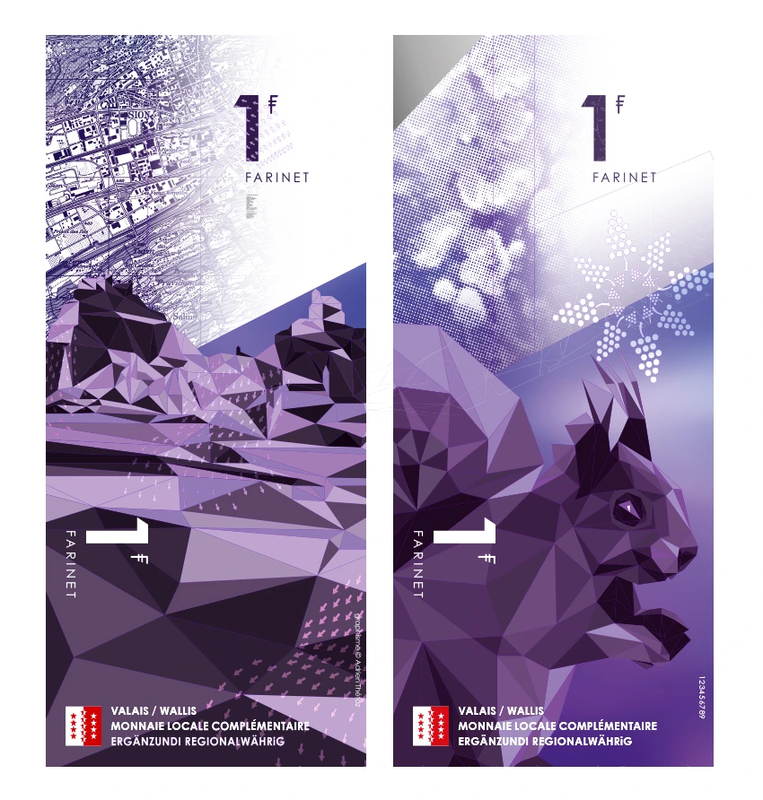
1 farinet1 / 8 · recto et verso
Souris : la loupe suit le pointeur · Clavier : ← → · Mobile : touchez et glissez
02
Le dossier du concours
Tout a commencé par un concours de design, en 2016. Mon dossier proposait un billet de 13 farinets, le Grand Chavalard
taillé en triangles — c’est lui qui a gagné. Les pages du dossier original, à lire à la loupe.
« Un symbole qui serait indéniablement régional, immuable. L’évidence de nos montagnes m’est apparue comme le choix le plus pertinent. »Adrien Thétaz, dossier de concours, 2016
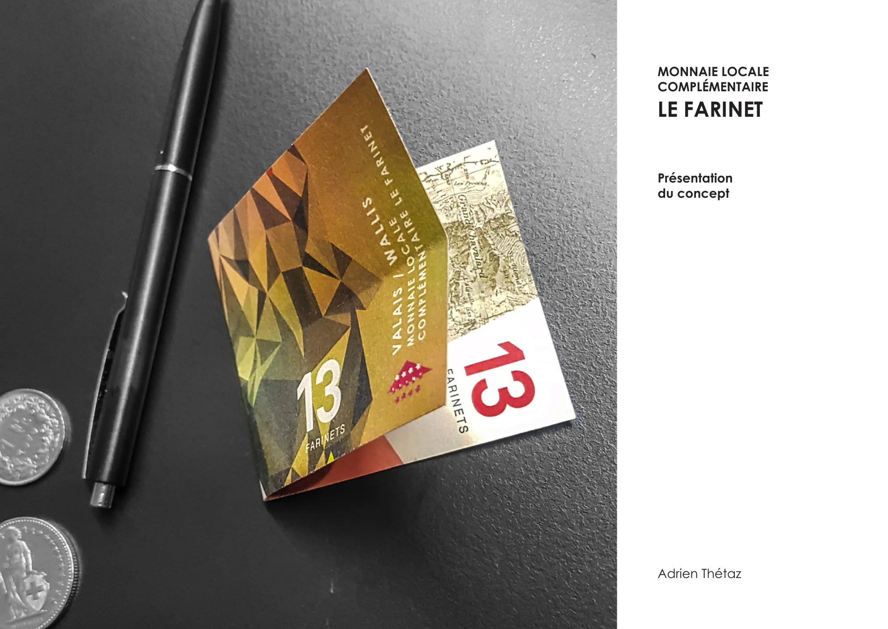
Couverture
03
Derrière la vitrine
Au Musée de la fausse monnaie à Saillon, la série complète a sa vitrine : les huit coupures alignées devant les Alpes,
avec la presse qui les a racontées.
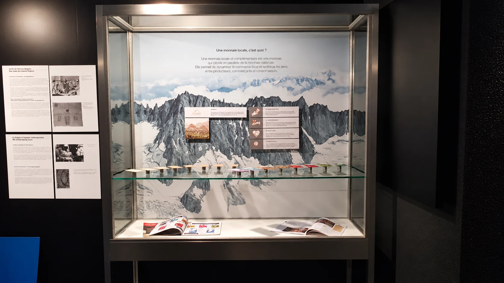
Musée de la fausse monnaie · Saillon
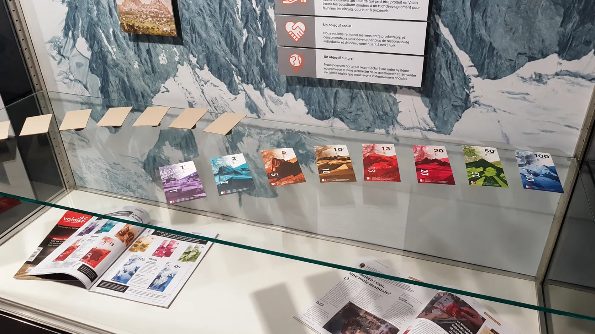
La série · de 1 à 100 farinets
04
Une deuxième vie
Quand le Farinet s’est arrêté, les billets restants ont été confiés à l’artiste valaisan Julien Loutz, connu pour ses
créations à partir de matériaux recyclés. Découpés en silhouettes par milliers, ils sont devenus 13 œuvres, exposées
à L’archipel, à Sion, du 31 janvier au 16 février 2025.
L’archipel, Sion · les 13 œuvres de Julien Loutz
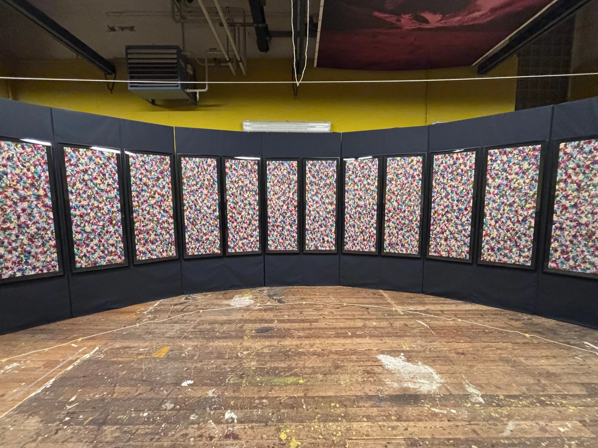
L’installation · treize panneaux en arc de cercle
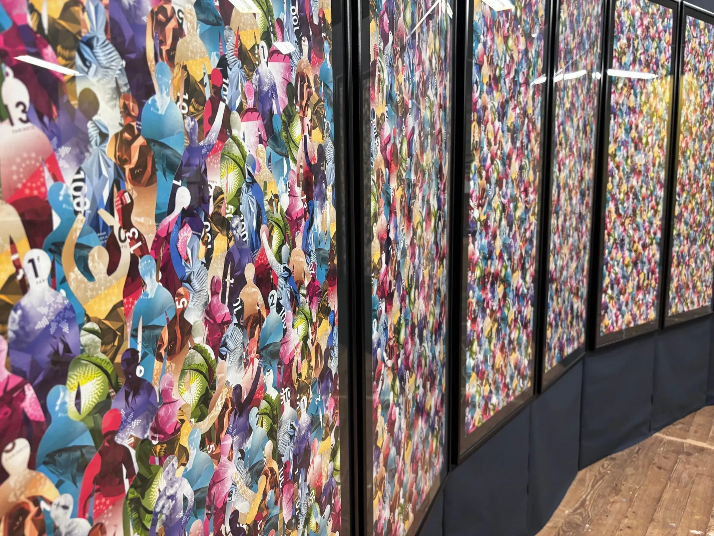
De près · chaque silhouette est un morceau de billet
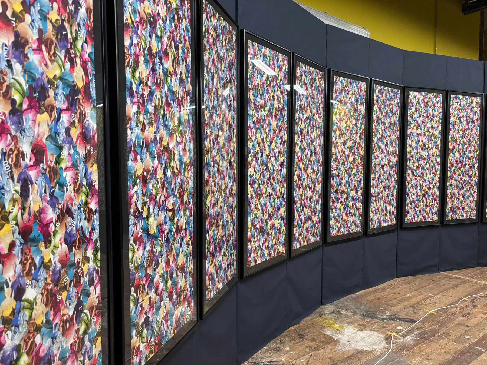
Les panneaux · une foule de couleurs
Sous la lumière noire
Ce que les billets cachaient
Les billets portaient des motifs invisibles à l’œil nu, imprimés à l’encre fluorescente : croix valaisannes,
flocons, grappes, soleils, logos. Sous lumière noire, les œuvres de Julien Loutz s’allument — et la foule se met à briller.
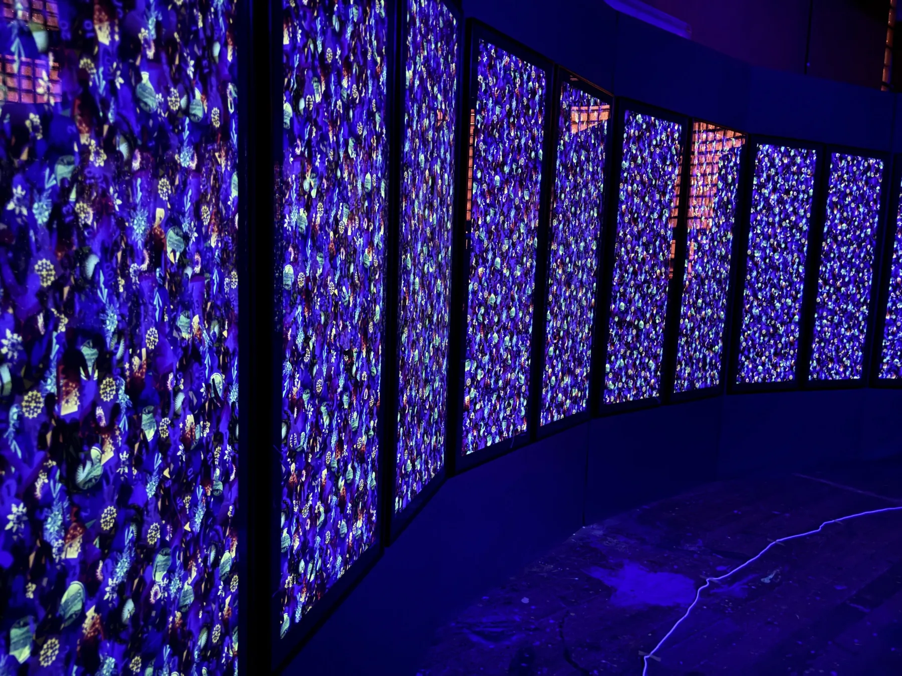
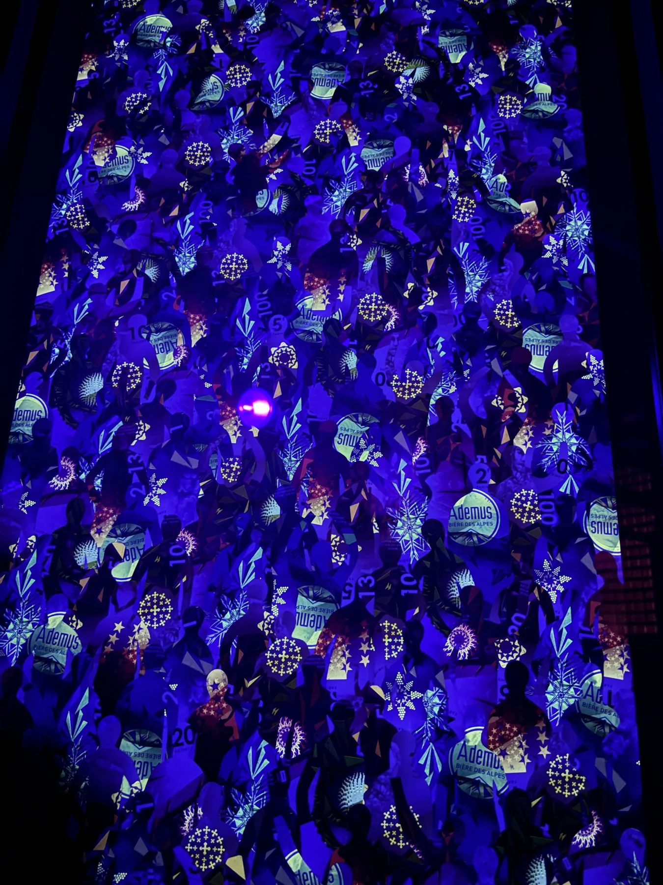
Une œuvre entière
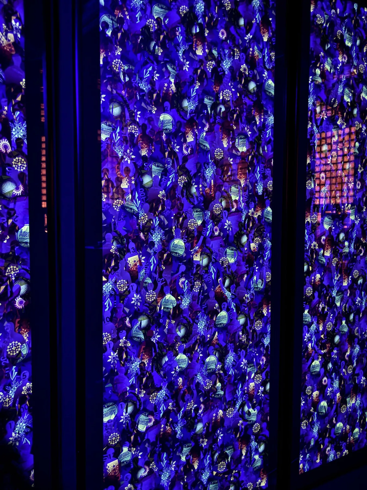
Trois panneaux
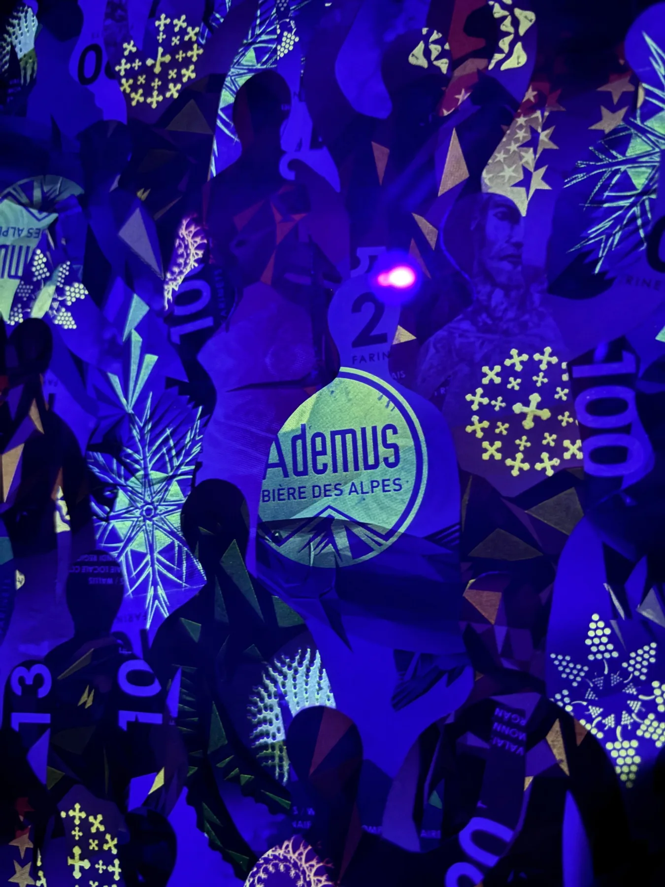
Les motifs de sécurité, révélés
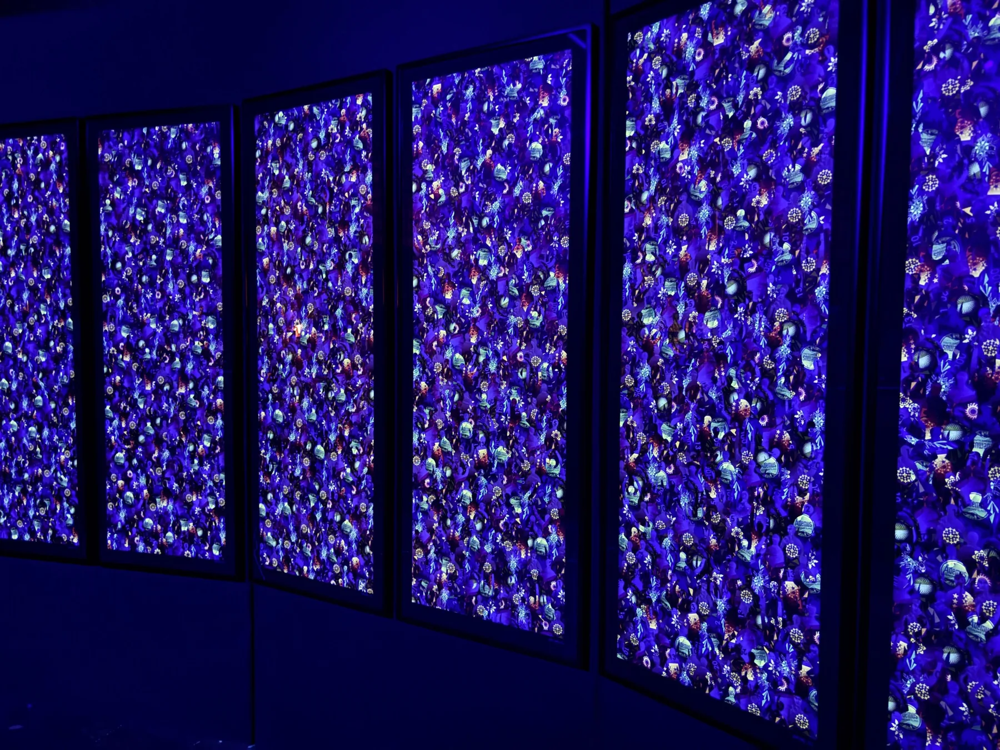
05
Un faussaire, une monnaie
Une monnaie locale qui porte le nom d’un faux-monnayeur : le clin d’œil est assumé.
Joseph-Samuel Farinet (1845–1880) inonde le Valais de fausses pièces de 20 centimes dans les années 1870
et en distribue aux pauvres, qui le cachent. Traqué près de Saillon, il meurt en 1880 dans des circonstances jamais
éclaircies. La légende en fait le « Robin des Bois des Alpes ».
Le Farinet, monnaie locale complémentaire, circule en Valais de 2017 à 2019 au taux d’un farinet pour un franc,
pour soutenir le commerce et les producteurs de la région. La Ville de Sion l’accepte à ses guichets, jusqu’aux amendes.
Le dessin. Chaque coupure associe un paysage ou un monument valaisan à un animal ou une figure du canton,
taillés en facettes, sur fond de carte topographique. Une couleur par valeur, des microtextes, des motifs fins :
tout ce qui fait un vrai billet.
Aujourd’hui, les billets sont exposés au Musée de la fausse monnaie à Saillon —
là même où Farinet a été traqué. Les derniers ont été recyclés en œuvres d’art par Julien Loutz.